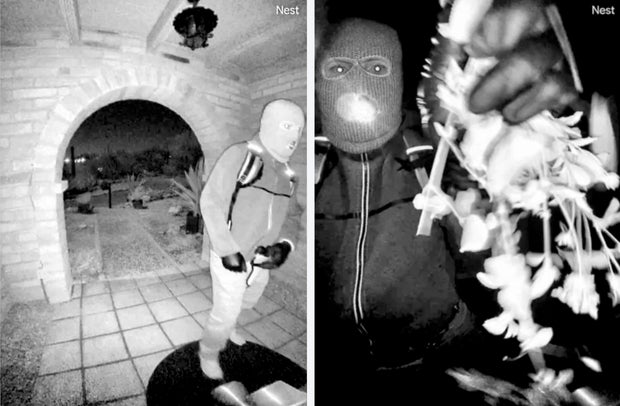
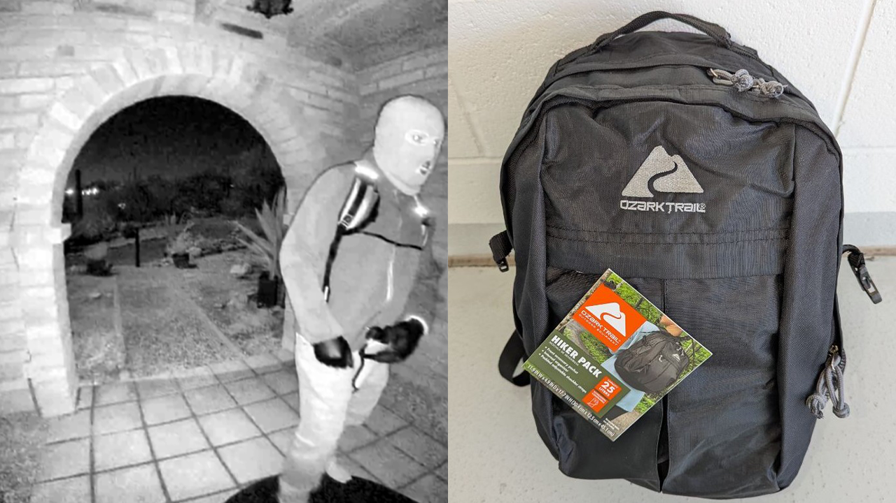

Overview
What RECALL Did
On February 1, 2026, Nancy Guthrie, 84, was taken from her home in the Catalina Foothills outside Tucson, Arizona. Her daughter is NBC TODAY anchor Savannah Guthrie. Within days, the case generated one of the largest crowdsourced investigations in recent memory: 85,000 Facebook group members, nine active Reddit threads, 100+ pages on Websleuths, and tens of thousands of tips flooding the FBI hotline.
RECALL applied structured open-source intelligence methods to the publicly available evidence. Not to compete with law enforcement, but to demonstrate what disciplined analysis produces when compared to the noise of unstructured crowdsourcing.
Several of our early assessments held up as the investigation progressed. Several popular theories we flagged as low-confidence collapsed within days.

FBI surveillance still. Masked suspect at Nancy Guthrie's front door, 1:47 AM, February 1, 2026. Source: FBI Phoenix Field Office
How We Work
Methodology
Over two analysis sessions totaling approximately 12 hours, RECALL systematically collected, verified, and cross-referenced open-source intelligence from six platforms. Every claim was rated on a 5-point credibility scale. Every finding is traceable to its source.
01
Multi-Platform Collection
RECALL monitored six platforms simultaneously: Reddit (9 subreddits), Facebook (85K-member group), Websleuths (100+ pages), X/Twitter, Instagram, and news media from 30+ outlets.
Every piece of information was tagged with its origin, timestamp, and an initial reliability assessment. Priority went to primary sources: law enforcement press conferences, FBI releases, court filings. Social media theories were treated as hypotheses requiring independent verification, never as evidence.
Custom data collection scripts processed social media at scale, extracting claims, timestamps, and engagement metrics to identify which theories were gaining traction and whether traction correlated with accuracy. (It usually didn't.)
02
Clinical Evidence Analysis
RECALL's lead analyst is a nurse practitioner with clinical experience in emergency and acute care. This background provides analytical depth that pure internet research cannot replicate.
Blood evidence: The blood at the scene was assessed as consistent with a moderate, survivable injury. Likely a head wound, which bleeds dramatically relative to severity. Not a volume consistent with a fatal bleed. The FBI's continued classification as a kidnapping aligns with this assessment.
Pacemaker telemetry: Nancy's pacemaker monitoring app lost connection at 2:28 AM. Public speculation treated this as a possible time of death. RECALL's clinical analysis identified a simpler explanation: the device lost its Bluetooth connection to the phone at the home. Nancy was moved beyond range. The pacemaker could still be functioning, and the FBI is now deploying drone-mounted scanners to search for its signal.
Medication dependency: Nancy's daily medications were left at the home, establishing a clinical timeline that narrows the window for safe recovery with each passing day.
03
Hypothesis Testing & Confidence Rating
Every major theory circulating online was logged, sourced, and evaluated on a 5-point credibility scale. Each was tracked as the investigation developed.
The key difference between structured analysis and crowdsourcing isn't access to information. It's calibrated confidence. When 50,000 people look at the same evidence, consensus forms fast and feels like proof. It isn't. RECALL rates every assessment and revises when new information arrives.
04
Structured Documentation
Every finding, every source, every assessment is archived with timestamps and confidence levels. RECALL maintains an intelligence workspace for each case with cross-referenced timelines, source catalogs, and decision logs.
This isn't for show. It's for reproducibility. If a finding matters, someone else should be able to trace exactly how we got there.

The crowd got the brand wrong. Community members confidently identified the suspect's backpack as a PROVIZ (specialty cycling brand, ~$90). The FBI corrected on Feb 12: it's an Ozark Trail Hiker Pack 25L, sold at Walmart for ~$25.
Results
What Held Up, What Collapsed
Structured analysis isn't about being right every time. It's about knowing what you're confident in and what you're not, before the answer arrives.
✓ Assessments That Held Up
✓
No forced entry theory
Evidence pattern points to someone with access or someone Nancy opened the door for. Still consistent with investigation.
✓
Amateur-with-research profile
Cheap equipment, improvised techniques, 40+ seconds of camera exposure. First-time offender who studied but lacks operational experience.
✓
Survivable injury assessment
Blood volume consistent with moderate wound, not fatal bleed. FBI continues to classify as kidnapping. Sheriff states belief Nancy is alive.
✗ Theories That Collapsed
✗
PROVIZ backpack identification
Community confidently ID'd as PROVIZ ($90 cycling brand). Actually an Ozark Trail from Walmart ($25). Entire demographic profile was wrong.
✗
Brother-in-law involvement
Viral suspect theory (395 comments, TV coverage). Entire Guthrie family officially cleared Feb 16. Phones, computers, vehicles processed.
✗
Ransom note authenticity
$6M Bitcoin demand appeared legitimate. Derrick Callella arrested for fraud. Prior: $430K unemployment theft. No connection to kidnapping.
The DNA Trail
Unknown male DNA was recovered from a glove matching the suspect's, found 2 miles from Nancy's home. No match across 22 million CODIS profiles. The sample has been sent to DNA Labs International for SNP profiling, enabling investigative genetic genealogy. This is the same technology that identified the Golden State Killer after 40 years.
Key Dates
Investigation Timeline
Jan 31, 9:48 PM
Nancy dropped off at home by brother-in-law Tommaso Cioni. Garage door closes.
Feb 1, 1:47 AM
Doorbell camera disabled by masked figure. FBI surveillance footage begins here.
Feb 1, 2:28 AM
Pacemaker app loses connection. Nancy moved beyond Bluetooth range of monitoring phone.
Feb 1, ~12:00 PM
Nancy doesn't show for church. Family searches home, calls 911.
Feb 10
FBI releases doorbell camera footage. RECALL begins structured analysis.
Feb 12
FBI identifies backpack as Ozark Trail 25L. Gloves recovered ~2mi from home. Unknown male DNA extracted.
Feb 13–14
SWAT raid on property ~2mi away. Up to 4 detained, Range Rover seized. All released, no arrests.
Feb 16
Entire Guthrie family officially cleared. DNA sent to private lab for genetic genealogy profiling.
Why This Matters
What Structured OSINT Demonstrates
This case study isn't about RECALL solving the Guthrie disappearance. That's the FBI's job, and they have resources we don't.
This is about demonstrating what structured methodology does that crowdsourcing can't: calibrated confidence that separates signal from noise, clinical expertise applied to physical evidence, source discipline that weights a sheriff's press conference differently from a Reddit thread, and transparency that makes every conclusion traceable.
Three confident crowd theories collapsed within days. Structured analysis flagged uncertainty on all three before they fell apart. That's the difference.